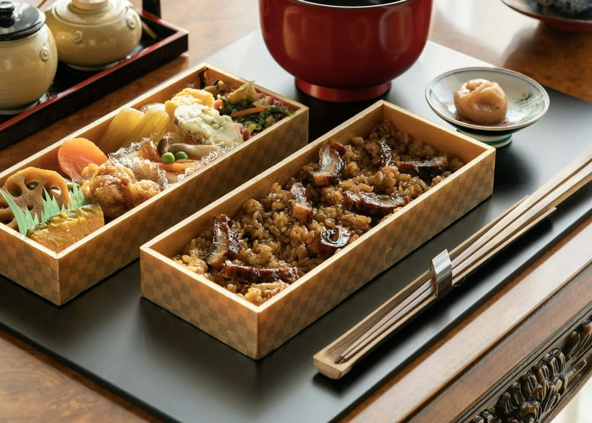
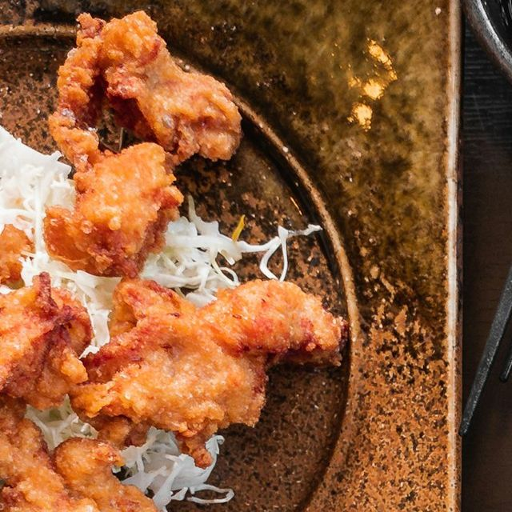

お品書きMenu
ホーム ／ お品書き
定食にはすべて、ごはん・お味噌汁・小鉢二品・お漬物がつきます。ごはんのおかわりは無料です。

日替わり定食一番人気
900円主菜はその日の仕入れで決めます。内容は店頭の黒板とInstagramでお知らせしています（税込）

唐揚げ定食
950円しょうがとにんにくを効かせた下味で、ひと晩寝かせてから揚げます。五個入り（税込）

とんかつ定食
1,100円厚めのロースを低めの温度でじっくり。ソースは野菜と果物を煮込んだ自家製です（税込）

小鉢いろいろ定食
1,000円その日の小鉢を五品。お肉やお魚が少なめの日がいい、という方に（税込）
そのほかの定食
一品・お飲みもの
- ごはんは「少なめ」「大盛り」を同じ値段でお選びいただけます。
- お弁当のお持ち帰りは、前日までのご予約で承ります。
- 価格はすべて見本用の架空の金額です。